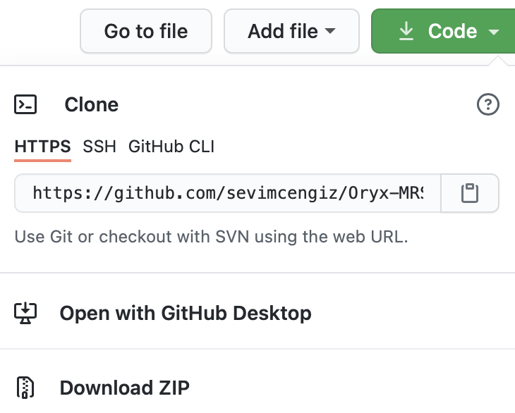
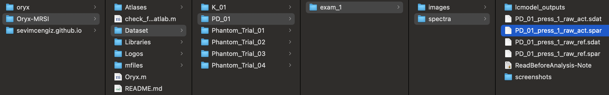

Chapter 3 Getting started
3.1 Requirements
FSL for FLIRT
Oryx-MRSI is tested on MAC (2.9 GHz Quad-Core Intel Core i7, 16 GB 2133 MHz LPDDR3, Radeon Pro 560 4 GB Intel HD Graphics 630 1536 MB ) and Ubuntu 18.04.4 LTS (Memory 32GIB, Processor Intel Core i7-9800X CPU (3.8GHzx16?), Graphics GeForce RTX 2070/PCle/SSE2)
3.2 Install Oryx-MRSI
Oryx-MRSI uses FSL-Flirt function so using FSL from MATLAB should be ready.
If you want to install FSL into your computer, check this link
If you use MAC, check this link (Advance Usage part-Using FSL from MATLAB)
If you use LINUX, check this link (Using FSL from MATLAB)
Plase download SPM12 using this link
Please, check Oryx-MRSI Github Repository.
Please, clone the repository, or download.

3.3 Before Use Oryx-MRSI
Add the entire Oryx-MRSI directory (with subfolders) to your MATLAB path.
Add the entire SPM12 directory (with subfolders) to your MATLAB path.
Please make sure that FSL usage from Matlab command window installation is completed properly.
Before running a data analysis using Oryx-MRSI, let’s check that FSL usage is from Matlab is done.
Please open matlab and run check_fsl_usage_from_matlab.m script which is given under Oryx-MRSI Github repo.
% FSL usage from Matlab command window installation check
% If this script gives an error, please go to this website and make sure
% that you have complete fsl-installation properly.
% If you use MAC, check this link : https://fsl.fmrib.ox.ac.uk/fsl/fslwiki/FslInstallation/MacOsX (Advance Usage part-Using FSL from MATLAB)
% If you use LINUX, check this link :
% https://fsl.fmrib.ox.ac.uk/fsl/fslwiki/FslInstallation/Linux (Using FSL
% from MATLAB)
function check_fsl_usage_from_matlab()
currentFolder = pwd;
datapath=[currentFolder, filesep, 'Dataset',filesep,'K_01',filesep,'exam_1',filesep,'images',filesep,'T1', filesep,'nifti',filesep,'K_01.nii.gz'];
outputpath=[currentFolder, filesep, 'Dataset',filesep,'K_01',filesep,'exam_1',filesep,'images',filesep,'T1', filesep,'nifti',filesep,'K_01_Bet.nii.gz'];
sprintf('FSL usage from matlab is checking by using FSL BET');
system(['bet ',datapath,' ',outputpath,' -m -f 0.35']);
sprintf('FSL usage from matlab is working.');
end
%%% For MacOsX, it might be helpful. Copied from https://fsl.fmrib.ox.ac.uk/fsl/fslwiki/FslInstallation/MacOsX (Advance Usage part-Using FSL from MATLAB)
% If you have installed FSL somewhere
% other than /usr/local/fsl/, change
% this first line accordingly.
%fsldir = '/usr/local/fsl/;
%fsldirmpath = sprintf('%s/etc/matlab',fsldir);
%setenv('FSLDIR', fsldir);
%setenv('FSLOUTPUTTYPE', 'NIFTI_GZ');
%path(path, fsldirmpath);
%clear fsldir fsldirmpath;
If there is no error, FSL usage from Matlab is completely installed.
If you get an error, plese check these:
If you use MAC, check this link (Advance Usage part-Using FSL from MATLAB)
If you use LINUX, check this link (Using FSL from MATLAB)
3.4 How to organize your raw data
If you want to go through with your own data set, the folder of data structure given below will help you.
There is a dataset folder under Oryx-MRSI.
Each patient should be listed under that folder.
Each patient should have T1w-MRI, T2w-MRI or both.
If you have T1w-MRI:
~/Oryx-MRSI/Dataset/PatientName/exam_1/images/T1/nifti/PatientName_Bet.nii.gz

If you have T2w-MRI:
~/Oryx-MRSI/Dataset/PatientName/exam_1/images/T2/nifti/PatientName_Bet.nii.gz
You need .sdat&.spar data and LCModel outputs.
For spectra:
~/Oryx-MRSI/Dataset/PatientName/exam_1/spectra/PatientName_press_1_raw_act.sdat
~/Oryx-MRSI/Dataset/PatientName/exam_1/spectra/PatientName_press_1_raw_act.spar
~/Oryx-MRSI/Dataset/PatientName/exam_1/spectra/PatientName_press_1_raw_ref.sdat
~/Oryx-MRSI/Dataset/PatientName/exam_1/spectra/PatientName_press_1_raw_ref.spar

For LCModel outputs at press_1:
~/Oryx-MRSI/Dataset/PatientName/exam_1/spectra/lcmodel_outputs/PatientName_press_1_raw_act/
- Each folder has to have .coord and .table files. They need to be named as:
**PatientName**_press_1_raw_act_sl1_4-7.coord (It shows slice 1, row 4, column 7)
**PatientName**_press_1_raw_act_sl1_4-7.table (It shows slice 1, row 4, column 7)